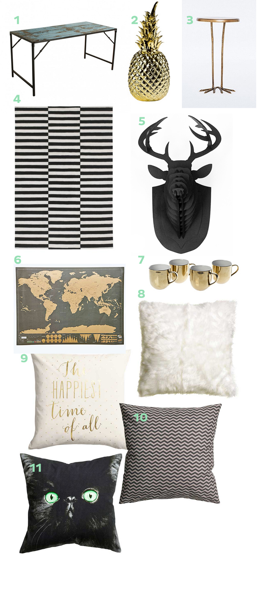

Wishlist de decoração - Sala de Amsterdam
Estou de mudança marcada para Amsterdam no final de Dezembro. Estou levando várias das minhas coisinhas de decoração da minha casa, mas com certeza quero aproveitar a oportunidade e comprar algumas coisas que não tinha e queria muito por lá. Fiz uma lista das coisas que serão prioridades para a minha sala (quando eu tiver uma, haha!). Dentre esses produtos, tem um tapete da IKEA que vem sendo meu sonho por alguns anos e uma mesa que parece ser feita de madeira velha/usada! E claro, uma cabeça de alce de madeira. Então, fica abaixo os 11 produtos mais cobiçados por mim nessa caçada à decoração nas lojas de Amsterdam.
Onde encontrar essas coisinhas?
- Scrap wood Folding Dining Table - Raw Materials
- Ananas Goud - Pols Potten
- Gold Birdy Table - Urban Outfitters
- Stockolm Rug - IKEA
- Cabeça de Alce Preta - HC Store
- Scratch Map Deluxe - Urban Outfitters
- Mugs Gold Outside - Pols Potten
- Faux Fur Cushion Cover - H&M
- Text Print Cushion Cover - H&M
- Cotton Cushion Cover - H&M
- Cushion Cover with a print - H&M